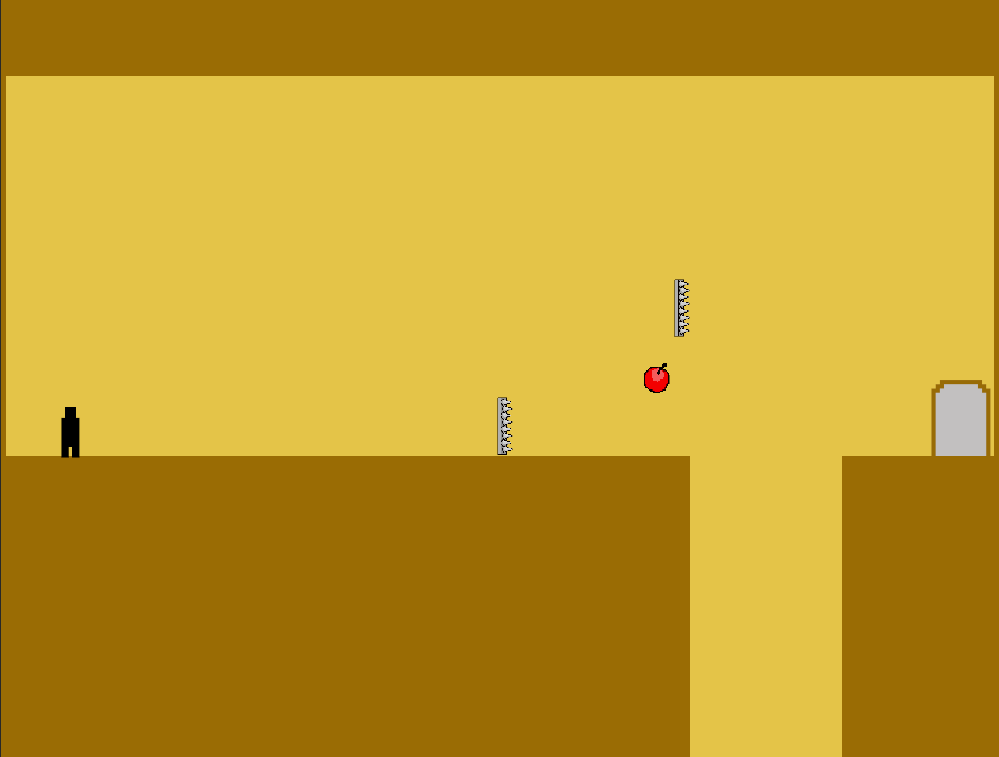
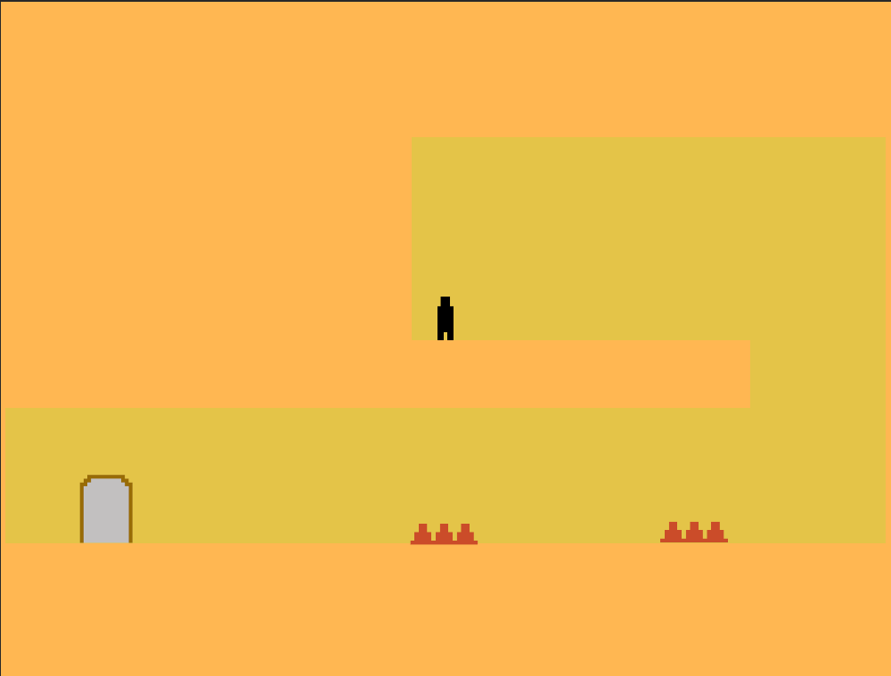
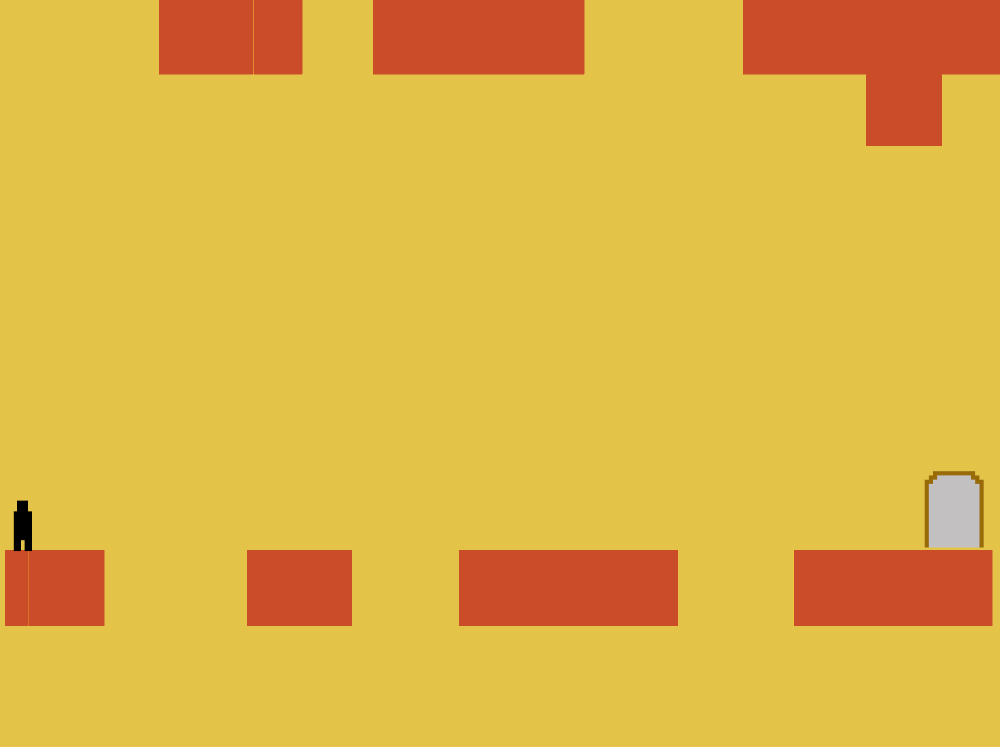
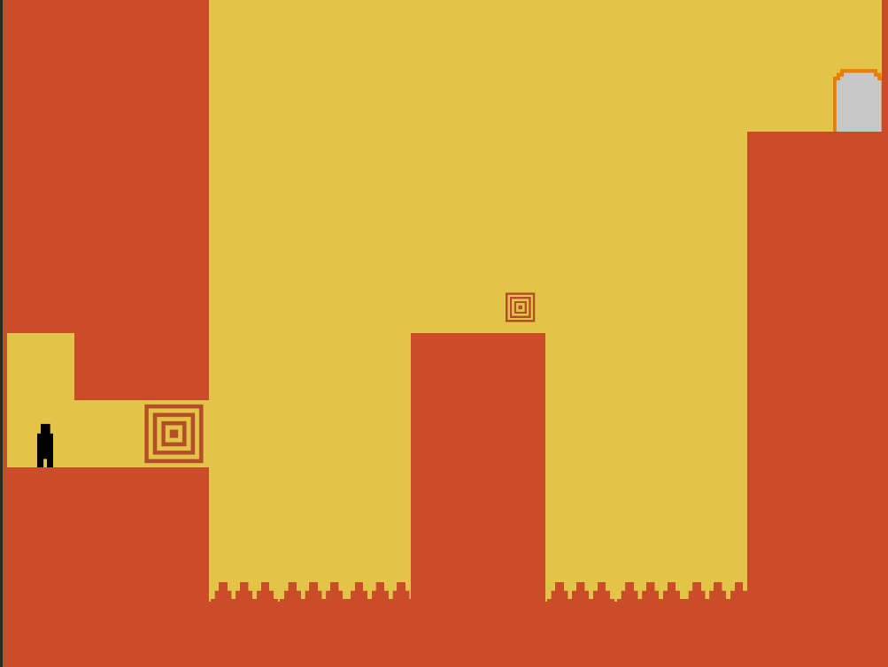
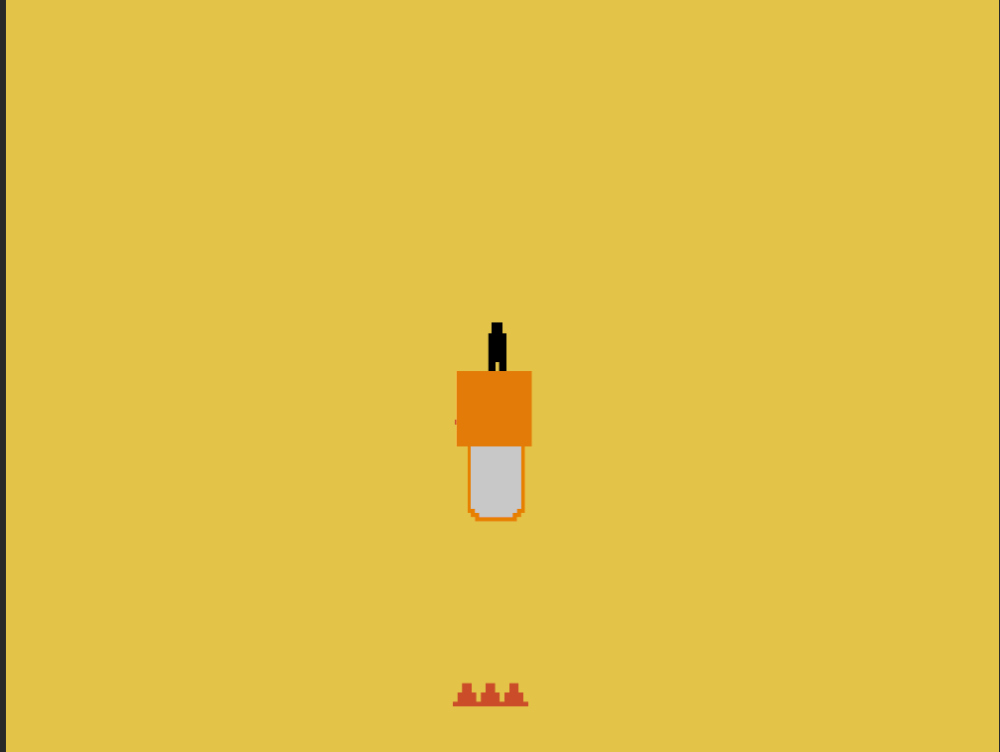

Developers 吴夏天 WU XIATIAN
王晁 WANG CHAO
姜宇骋 JIANG YUCHENG
裴一丰 PEI YIFENG
Touhou: Kosuzu's Adventure
东方: 小铃奇闻
As the daughter of the rental bookstore in Gensokyo, Kosuzu Motoori, you hear from your good friend Hieda no Akyuu that she has found a very interesting book. You are about to go and meet up with her, but as you walk along the familiar route, something gradually seems off. When you come to your senses, you find yourself in a castle. There, you will encounter the legendary great sage of Gensokyo, gain a mysterious power, and go through many adventures, trying to solve the mystery of your friend's disappearance...
你作为幻想乡租书店里的女儿本居小铃，从好友稗田阿求那里听说找到了一本很有趣的书，正要前去与好友汇合， 可沿着熟悉的路线走啊走，逐渐变得不对劲起来，回过神来竟到了一座城堡里。在那里，你将遇到传说中幻想乡的 大贤者，获得奇妙的能力，经历重重冒险，试图解开好友失踪的谜题……
Game Pitch
Click to Play
EXE Download


Resources we used are from:
https://itch.io/c/5505623/yeyin333s-collection
https://opengameart.org/
https://www.spriters-resource.com/mobile/touhoulostword/?source=genre
Music we used are from: Touhou Project
Games that inspired us: Touhou Project, Portal, Titan Fall II, I Wanna Lockpick

Developers 彭雍媛(Peng Yongyuan)
李佳仪(Li Jiayi)
张逸涵(Zhang Yihan)
坠入梦境Falling Dream
当梦境与现实交织，一段关于记忆与真相的旅程悄然展开。《坠入梦境》带你穿越四个独特的关卡，每一处都藏着被时光掩埋的故事。唯有触发所有隐秘的剧情线索，才能拼凑出完整的真相。 第一关，你不小心打碎了妈妈的花瓶，碎片散落在家中的每个角落，每一片都承载着家庭成员的回忆；第二关，你与父亲并肩坐在夕阳下，余晖中隐藏着他未曾诉说的过往；第三关，你踏入一片神秘的森林，未知的秘密在树影间若隐若现；第四关，一条蜿蜒的路隐喻着人生的轨迹，带你直面内心最深处的答案。 在跳跃与探索中，感受亲情的温度与人生的重量，坠入梦境的深处，揭开那层被遗忘的面纱。
When dreams and reality collide, a journey of memory and truth begins. FallingDream takes you through four unique levels, each hiding stories buried by time. Only by unlocking every hidden clue can you piece together the full picture. In Level 1, you accidentally shatter your mother’s vase, scattering fragments that hold your family’s memories. Level 2 finds you sitting with your father under the sunset, where the fading light reveals his untold past. Level 3 leads you into a mysterious forest, its shadows concealing secrets waiting to be uncovered. Finally, Level 4 unfolds as a winding path, a metaphor for life’s journey, guiding you to confront the answers within. Jump, explore, and feel the warmth of family and the weight of life as you fall deeper into the dream, uncovering the truth that lies beneath.


Developers
Cheng Yuan（程远）Wu Wenzheng（吴文正）
Han Peiting（韩霈霆）
Li Zizhen（李梓臻）
Stack & Overflow
This is a 2D platformer—but with a challenging twist! Make strategic use of the game’s mechanics, navigate from the starting point to the goal in each level, progress through the story, and help the protagonist escape!
Our protagonist is a retro system enthusiast. One day, he wakes up to find himself trapped inside an old and chaotic software system, where the design is a mess and space is extremely limited. To escape, he must communicate with system maintainers, locate the system kernel, and repair the system. Due to the system's instability, the protagonist can only perform limited actions, and every move he makes could impact his surroundings. Core Mechanics: The protagonist must manage a stack-like memory space. Every action—moving, jumping, sneaking, or sprinting—is pushed onto the stack. When the action stops, it is popped from the stack.- The stack also stores map data. If too many actions are performed, the stack may overflow into the "Yellow Zone," causing certain map tiles to appear or disappear!
- If too many simultaneous actions cause the stack to overflow into a critical "Red Zone," you will immediately lose the game!
Credit
Credit for this game:Background music and most sound effects are from the paid soundtrack of Baba is you.
Some sound effects are from Ace Attorney.
Some map textures are from Minecraft.
Some background images and character illustrations were created by OpenAI.
Some code was generated by GitHub Copilot.
The in-game font is from the open-source GitHub repository TakWolf/fusion-pixel-font.
All these are for class project use only. Commerical use is prohibited until these contents above are replaced by original ones.

Developers Gao Mingrui（高明睿）
Zhang Shengyao（张圣尧）
Lu Xuanyu（陆宣羽）
Tian Yuze（田雨泽）
Wang Yiyun（王奕匀 美术指导）
FrostBonds:Whispers of Whitespeak
This is a platform-jumping adventure game. The story is set in the distant continent of Carosia, starting from a small perspective. Players immerse themselves in the game as Claire, the younger sister, and experience a tale of deep sibling affection.The characters have the abilities to dash and climb walls, which can deal with complex terrains. The game does not have fighting scenes, aiming to provide players with a pure platform-jumping experience. The game's art style is clean and warm, without any scenes involving blood or horror.For any inquiries, please contact us at 1965063381@qq.com or 541132457@qq.com.Moreover,thanks to Wang Yiyun for her guidance in the field of fine arts.


Developers
王一霖 Wang Yilin章圣达 Zhang Shengda
陈思含 Chen Sihan
严昕瑶 Yan Xinyao
Prank Master
Initially, we need to press our leftshift for double times
Game Start!
We will notice a door
Use your left and right arrow or A and D and Space
to enter the door
Oh,if you are "dead"
You can press the R to restart,
press the L to go back to the last one,
press the N to go to the next one,
Good Luck!
    

Developers Li Yibo（李奕博）
Zhang Shengqi（张晟祺）
Liu Tianyi（刘添毅）
Yang Zihang（杨子航）
MerLin
Embark on a Magical Adventure with Merlin!
In Merlin’s Quest, you take on the role of Merlin, a old magician on a journey to master the art of elemental magic. Explore diverse and treacherous landscapes, from enchanted grassland to ancient desert, solving puzzles and battling foes along the way.
Harness powerful elemental spells—combine fire, water, earth, and air to create unique magic effects and overcome challenges.
With strategic spellcasting and skillful movement, craft your own path to magical mastery. Will you conquer the trials and unlock the secrets of the arcane?
Game Pitch
Click to Download EXE


CREDIT:Our game materials are provided by AI and search engines, and we are grateful to the original creators for their work.
tilesets: https://scrabling.itch.io/pixel-isometric-tiles
trees: https://gametoolkit.itch.io/top-down-forest-tileset
elements: https://github.com/Azanor/thaumcraft-beta
Thanks for playing Merlin’s Quest! We hope you enjoy the game.
Developers Xie Yukun（谢宇焜）from XJTU
Zhu Yuquan（朱昱全）from XJTU
Bai Yunchen（白云程） from XJTU
Nightmare Apocalypse
Dive into Nightmare Apocalypse, a haunting 2D dark fantasy RPG set in the eerie corridors of Xi'an Jiaotong University. You play as an ordinary sophomore who, after pulling an all-nighter to meet a deadline, leaves the library at midnight, only to collapse into a chaotic dreamscape. As you awaken in this twisted realm, a chilling revelation strikes: you’ve stumbled into a nightmarish dimension forged from the collective fears of your fellow students.
To escape and return to your dorm for some much-needed sleep (because, let’s face it, you’ve got an 8 a.m. class), you must battle through surreal landscapes, confront terrifying bosses born from the darkest corners of the human psyche, and unravel the mysteries of this cursed dreamworld.
Will you conquer the nightmares and make it back in time for your morning lecture? Or will you be trapped forever in the abyss of the Nightmare Apocalypse? The choice—and the survival—is yours.
Instructions:
Enter: Start the game P: Quit the game R: Restart the game
A, D: Move left and right
Space: Jump J: Attack
Q: Switch between ranged and melee attack modes
E: Use to attempt teleportation when certain items are collected
Boss Level (Level 2): Press I to invert gravity
Tian Zimu（田子牧）
Zhou Zhenliang（周振亮）
Jiang Haocheng（蒋浩成）
Who_What_Where
你掉入了一片未知的世界，记忆也随之消失了。你只有不断前行，才能恢复自己的记忆，找回自己的身世。在前进的路途中，你将遇到许多困难，面对许多挑战，遵循你的直觉，出发吧!
You have fallen into an unknown world, and your memory has vanished. The only way to regain your memories and uncover your identity is to keep moving forward. Along the way, you will encounter numerous obstacles and face many challenges. Follow your instincts and embark on your journey!
按键 / Controls:
W, A, D: 控制跳跃，左移，右移/Move left, right, and jump
P: 跳关 / Skip level
I: 查看按键信息 / View key info
鼠标左键: 攻击 / Left mouse click: Attack
我们在游戏里有详细的介绍，剩下的到游戏里再探索吧。
Detailed instructions are provided in the game. The rest is up to you to explore!


Credit
- 创意来源 / Inspiration: Dead Cells, Sekiro
-
动画素材 / Assets: Unity Asset Store:
HeroKnight,
Dialogue System,
Enemy.......
- 音乐素材 / Music: Dead Cells, Unity Asset Store
王启源 Wan Qiyuan
肖博暄 Xiao Boxuan
贺佳宁 He Jianing
Phantom Mirage
Step into a world of mysterious illusions and cunning puzzles! In Phantom Mirage, you control a brave adventurer who can create “phantoms of the past” to activate various contraptions and unlock new pathways. Carefully plan where and when you leave these phantoms, as colliding with them or falling into the void will spell instant failure! Each level introduces different “phantom generation steps.” This mechanic challenges you to observe and strategize, anticipating when your phantom should appear to help you reach the exit. With every new stage, the environment grows more complex, and the number of phantom steps changes, forcing you to think on your feet—or rather, your phantoms’ feet! Dare to journey into Phantom Mirage where your past is more than just a memory—it’s your key to victory…or your downfall.
Game Pitch
Click to Play
EXE Download